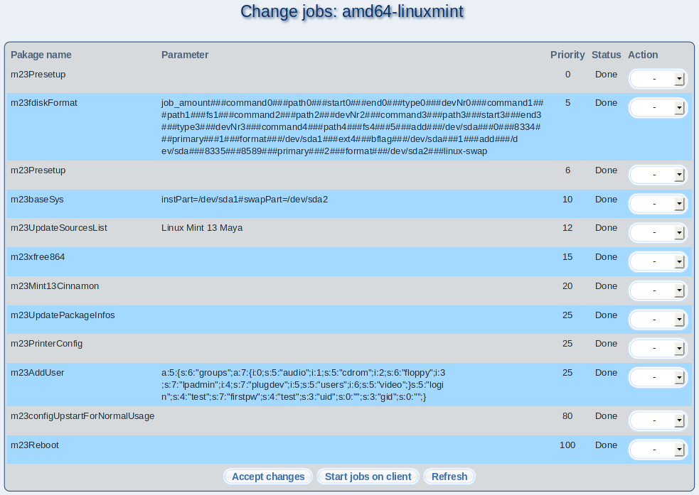

In this dialog you can see done and waiting client jobs and change the job status. You can set the jobs to the following stati:
- Select Delete in the ''Action'' row to delete the job definitively.
- Rerun executes an already done job again.
- Done marks a job as done and doesn't executes it again.
Click on ''Accept changes'' to store your changes. Click on ''Start jobs on client'' if you want to execute waiting jobs immediately.
root
2016-10-07